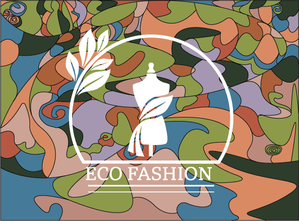
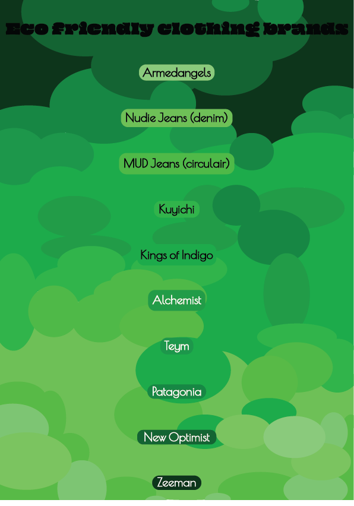
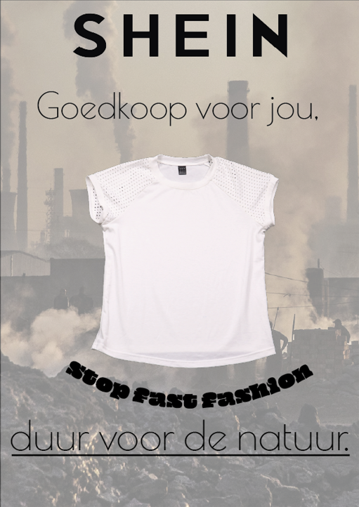
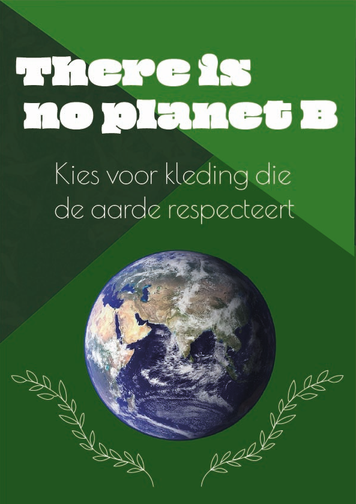
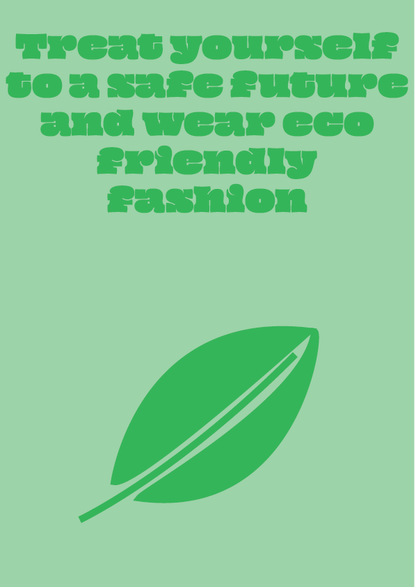
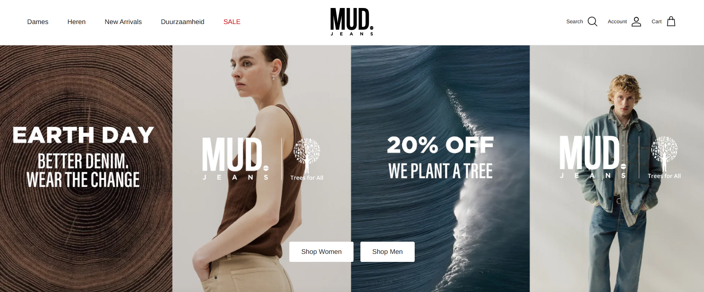
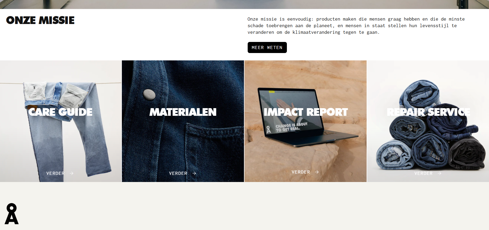

Fashion zonder footprint · Spring/Summer 2026
Eco Fashion geeft je inzicht in de duurzaamheid van jouw kleding, helpt je merken te beoordelen en motiveert je om bewustere keuzes te maken.

Over ons concept
Eco Fashion is een interactief project van Sint Lucas studenten voor de MD-Week 2026. Wij kozen het thema Duurzame Fashion en vertaalden dat naar een digitale beleving die jou bewust maakt van de impact van kleding.
Eco Fashion: een interactieve website die je helpt duurzamere kledingkeuzes te maken.
Studenten bewust maken van de milieu-impact van kleding en hen aanzetten tot duurzamere keuzes.
Meer inzicht in merken, materialen en keurmerken, zodat je kleding koopt die je écht draagt én die de planeet spaart.
Onze Posters

Eco-vriendelijke kledingmerken

Stop fast fashion

There is no planet B

Treat yourself to a safe future
Merk Spotlight
MUD Jeans is een van de meest duurzame denimmerken ter wereld. Hun circulaire model maakt het mogelijk jeans te leasen én terug te geven voor recycling.


Duurzaamheid Check
Vul een paar vragen in over jouw kledingstuk en ontdek direct hoe duurzaam het is. Krijg een persoonlijke score en tips om bewustere keuzes te maken.
Merk Database
Controleer of jouw favoriete merk duurzaam is. Onze database bevat duizenden merken met scores op gebied van materiaal, arbeidsomstandigheden en milieu-impact.
Foto Ranking
Bekijk kledingfoto’s uit de map en zie direct hoe duurzaam het merk scoort. De stijl sluit aan op de merkdatabase, zodat alles één geheel blijft.
Community Feedback
Deel jouw mening over outfits van anderen. Geef aan of een look duurzaam aanvoelt, wat je ervan vindt en help de community bewustere keuzes te maken.
Fast Fashion Impact
Fast fashion heeft een enorme impact op het milieu. Bekijk de feiten en begrijp waarom bewuste keuzes zo belangrijk zijn.
Duurzame Gids
Met deze zes tips herken je duurzame kleding en maak je bewustere keuzes, zonder je stijl in te leveren.
Kijk op het waskaartje naar materialen. Biologisch katoen, linnen, Tencel en wol zijn duurzamere keuzes dan polyester of viscose.
GOTS, Fair Trade, OEKO-TEX en Cradle to Cradle zijn betrouwbare certificeringen die aangeven dat kleding aan strenge eisen voldoet.
Gebruik onze merkdatabase of sites als Good On You om te controleren hoe transparant een merk is over zijn productie en waardenketen.
Een duurder kledingstuk dat 10 jaar meegaat is duurzamer dan goedkope fast fashion die na 5 wasbeurten kapot gaat. Kwaliteit telt.
Vintage, kringloop en swapping zijn de meest duurzame opties. Geen nieuwe grondstoffen, geen transport, minder water en CO₂.
Draag ik dit minstens 30 keer? Past het bij wat ik al heb? Koop ik het om een gevoel te vullen? Bewuste vragen = bewuste keuzes.
Officiële Labels
Deze certificeringen garanderen dat kleding aan strenge eisen voldoet op het gebied van milieu en arbeidsomstandigheden.
Garandeert dat textiel biologisch geteeld is én eerlijk geproduceerd, van het veld tot het eindproduct.
Controleert of arbeiders in de kledingindustrie eerlijk betaald worden en in veilige omstandigheden werken.
Garandeert dat elk onderdeel van een kledingstuk getest is op schadelijke stoffen, veilig voor huid en milieu.
Het officiële Europese milieukeurmerk voor producten die minder schadelijk zijn voor het milieu gedurende hun hele levenscyclus.
Interactieve Quiz
5 vragen over fast fashion en duurzame keuzes. Hoe bewust ben jij al?
Vraag 1 van 5
Website Kleurenpalet
Dit zijn de kleuren die gebruikt zijn in het ontwerp van deze website, gebaseerd op het Spring/Summer 2026 palet.
Hoofdkleuren
Klassiek palet